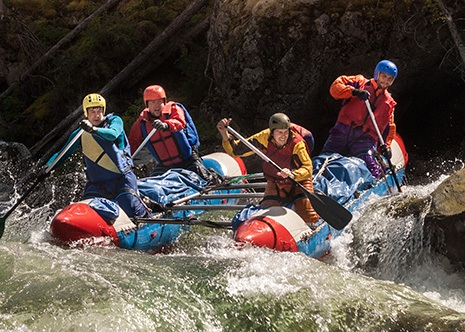

Discover adventures carefully designed for all levels: from leisurely hikes to multi-day expeditions. Each trip includes a professional guide, basic equipment, and logistical support.



Book a Trip
What Makes All-Outdoors Different?
- LEGACY – An Original Pioneer of California Rafting Since 1962: More Experience
- RELIABILITY – Family Owned & Operated for 62 Years: More Rafting Knowledge
- SPECIALIZATION – Only California and Nowhere Else: More Expertise
- VARIETY – 10 Premier California Rivers, 21 Different Trips: More Options
- FLEXIBILITY – 100% Trip Credit Cancellation Policy: More Peace of Mind
- COMMITMENT – Quality Service Guaranteed: More Assurance
BEGINNER-INTERMEDIATE
CLASS III
South Fork American River
California's most popular whitewater rafting river.
- Day 1: Approach and camping.
- Day 2: Summit ascent.
- Day 3: Descent and transfer.
- Per-Person Rate: $119 - $419.
- Group size: 6–12
INTERMEDIATE-ADVANCED
CLASS IV+
Goodwin Canyon / Stanislaus River
Scenic volcanic canyon, fun rapids, two Class IV's.
- Day 1: Approach and camping.
- Day 2: Summit ascent.
- Day 3: Descent and transfer.
- Per-Person Rate: $119 - $419.
- Group size: 6–12
TRIPS FOR YOUNG KIDS
CLASS I-II
Tom Sawyer Float Trip (South Fork Easy Section)
Special trip for families with children too young for the Beginner-Intermediate trip.
- Day 1: Approach and camping.
- Day 2: Summit ascent.
- Day 3: Descent and transfer.
- Price: $780 per person
- Group size: 6–12